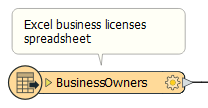
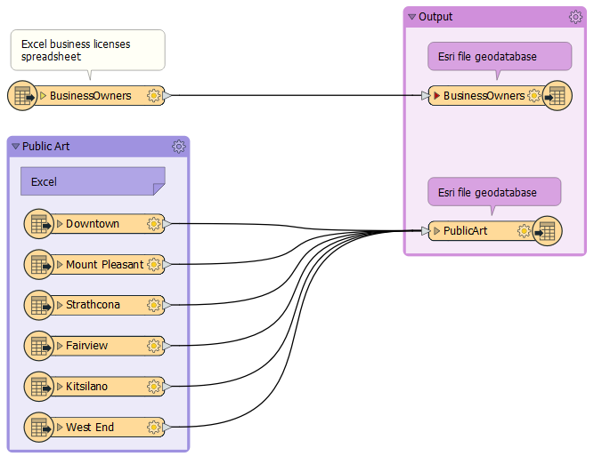

After completing this unit, you’ll be able to:
Sven has created a workspace that converts his data from Excel to geodatabase. However, before he finishes working on this workspace, Sven needs to add bookmarks and annotation. Bookmarks and annotation provide documentation for your workspace. If you have any experience programming, documenting your workspace is like commenting your code. Taking these steps ensures that if your main FME author goes on vacation or leaves the company, documentation will be available to help the next FME author maintain, troubleshoot, and expand your organization's FME workspaces.
As a first step, Sven will use bookmarks to describe sections of his workspace. Bookmarks help you organize your workspace into logical sections. They make it easier to tell at a glance what each section of the workspace is doing. They also have some advanced functionality that are useful when working with large workspaces, such as the ability to zoom to a particular bookmark or to collapse bookmarks to reduce visual clutter.
Sven opens FME Workbench (2021.0 or later) and adds two bookmarks to his workspace to surround his reader and writer feature types. He does this by selecting all the feature types he wants to include in a bookmark.
Then he clicks on Bookmark in the toolbar.

After clicking the button, his feature types are surrounded by the colored bookmark. He can then type in a name. He names the Excel reader feature type bookmark “Public Art” and the writer feature type bookmark “Output”.

He also wants to add a note to describe what formats are being read. To do this, he adds an annotation by right-clicking on the BusinessOwners reader feature type and then clicks Attach Annotation. He edits it to say: “Excel business licenses spreadsheet”.

This annotation makes it easy to see what data is being read and written. He repeats the process for his other reader feature types, resizing his bookmarks by clicking and dragging their edges as needed.

Make sure you have followed along with Sven’s steps.